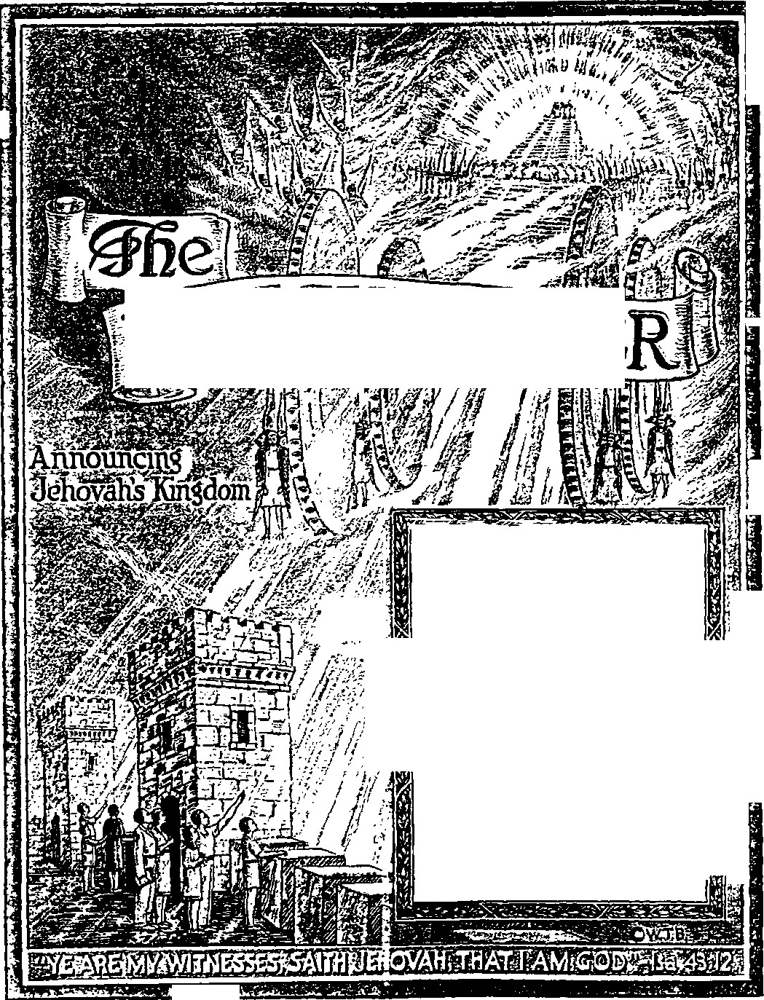

r
A*
I
3
3
3
CONTENTS
'ft
a I
ft
1;
a
SESE2
-Ezekiel 35:15.
Vol. LXV Semimonthly
No. 19
OCTOBER 1, 1B44
The Kino’s M*«riage Feast__________
The First Call .................................
The Second Cal] ............................
The Third Call ................................
The Wedding Garment ______________
The Sono or the Kingdom ............
D»’h.*h, a F»'**le Judas______________
“Prodigal Son” Testimony Period “Watchtowak” Studies ..................
“The Kingdom Is at Hand”___________
“The Kingdom or God Is Nigh"__
“The Kingdom Is at Hand”
Question Boont-it...........
Kingdom Service Song Book_____
WatchtowEdition or
291 293 294 296
297 300 302 290
290 290 290
304
304
kiosicks Standard Version Bible 304
,v
to F
Published Semimonthly By
WATCH TOWER BIBLE & TRACT SOCIETY 117 Adama Street • - Brooklyn 1, N.Y., U.S.A.
Officers
N. H. Knorr, President W. E. Van Amburgh, Secretary “And all thy children shall be taught of Jehovah; and great shall be the peace of thy children.” - heiah 54:13.
THE SCRIPTURES CLEARLY TEACH
THAT JEHOVAH is the only true God and is from everlasting to everlasting, the Maker of heaven and earth and the Giver of life to his creatures; that the Logos was the beginning of his creation, and his active agent in the creation of all other things, and is now the Lord Jesus Christ in glory, clothed with all power in heaven and earth, as the Chief Executive Officer of Jehovah;
THAT GOD created the earth for man, created perfect man for the earth and placed him upon it; that man willfully disobeyed God’s law and was sentenced to death; that by reason of Adam’s wrong act all men are born sinners and without the right to life;
THAT THE LOGOS was made human as the man Jesus and suffered death in order to produce the ransom or redemptive price for obedient ones of mankind; that God raised up Jesus divine and exalted him to heaven above every other creature and above every creature’s name and clothed him with all power and authority;
THAT GOD’S CAPITAL ORGANIZATION is a Theocracy called Zion, and that Christ Jesus is the Chief Officer thereof and is the rightful King of the world; that the anointed and faithful followers of Christ Jesus are children of Zion, members of Jehovah’s organization, and are his witnesses whose duty and privilege it is to testify to the supremacy of Jehovah, declare his purposes toward mankind as expressed in the Bible, and to bear the fruits of the Kingdom before all who will hear;
THAT THE OLD WORLD ended in A. D. 1914, and the Lord Jesus Christ has been placed by Jehovah upon his throne of authority, has ousted Satan from heaven and is proceeding to the establishment of the "new earth’’ of the New World;
THAT THE RELIEF and blessings of the peoples of earth can come only by and through Jehovah’s kingdom under Christ, which has now begun; that the Lord’s next great act is the destruction of Satan’s organization and the complete establishment of righteousness in the earth, and that under the Kingdom the people of good-will that survive Armageddon shall carry out the divine mandate to “fill the earth” with a righteous race.
ITS MISSION
HIS journal is published for the purpose of enabling the people to know Jehovah God and his purposes as expressed in the Bible. It publishes Bible instruction specifically designed to aid Jehovah’s witnesses and all people of good-will.
It arranges systematic Bible study for its readers and the Society supplies other literature to aid in such studies. It publishes suitable material for radio broadcasting and for other means of public instruction in the Scriptures.
It adheres strictly to the Bible as authority for its utterances. It is entirely free and separate from all religion, parties, sects or other worldly organizations. It is wholly and without reservation for the kingdom of Jehovah God under Christ his beloved King. It is not dogmatic, but invites careful and critical examination of its contents in the light of the Scriptures. It does not indulge in controversy, and its columns are not open to personalities.
Teaset SUMcairnos Price
United States, *1.00: all other countries, *1.50, American currency; Gbeat Britain, Australasia, and South Atbica. 6s. American remittances should be made by Postal or Express Money Order or by Bank Draft. British, South African and Australasian remittances should be made direct to the respective branch offices. Remittances from countries other than those mentioned may be made to the Brooklyn office, but by ZnteraotioaMl Postal Money Order only.
Foreign Orrices
BrtttsA 34 Craven Terrace, London, W. 2, England Awtralseisn T Beresford Boad, Stratbfleld, N. S. W„ Australia
South African ..... , _ Boston House, Cape Town, South Africa
Indian 167 Love Lane, Bombay 27, India
Please address the Society in every ease.
Translations of thia journal appear lu several languages.
ALL SINCERE STUDENTS OF THE BIBLE who by reason of Infirmity, poverty or adversity an unable to pay the subscription price may have The Watchtower free upon written application to the publishers, made once each year, stating the reason for so requesting it. We an glad to tbne aid the needy, but the written application once each year u required by the postal regulations.
notice to Subscribers: Acknowledgment of a new or a renewal subscription will be sent only when requested. Change of address, when requested, may be expected to appear on address label within one month. A nnewal blank (carrying notice of expiration) will be sent with the journal one month before the subscription expires.
Printed in the United States of America entered ae second-class matter at the poet office at Brooklyn, N. F., under the Act of March t, J879.
"PRODIGAL SON” TESTIMONY PERIOD
The month of October comes in the 1944 Service Calendar under the above title. All familiar with the parable remember that the prophetic story of the prodigal son was given by Jesus in connection with his nation-wide announcement of the Kingdom of God. Most appropriate is it therefore that, during this October Testimony Period, which is world-wide, when the “prodigal son” class are being aided to return to the heavenly Father, the two new publications to be distributed to this class should be entitled, the book “The Kingdom Is at Hand" and the booklet “The Kingdom of God Is Nigh”. The two will be offered in combination by all Kingdom announcers on a contribution of 25c. The circumstances surrounding the Testimony Period are thrilling, and all desiring to have part in this treasure of service will joyfully start at the earliest. Many of our newly interested readers are wanting to share in this Kingdom announcement m company with others, and we invite such to send their inquiries on the work promptly to this office.
"WATCHTOWER” STUDIES
Week of November 5: “The King’s Marriage Feast,” fl 1-22 inclusive, The Watchtower October 1, 1944.
Week of November 12: “The King1* Marriage Feast,” fl 23-44 inclusive, Ths Watchtower October 1, 1944.
"THE KINGDOM IS AT HAND”
This 384-page book was released by the Society’s president at the recent United Announcers’ Theocratic Assembly and was given a royal reception. “Ths Kingdom Is at Hand” brings together all the important scriptures and events bearing upon God’s kingdom and weaves them together into an interesting but most enlightening story of truth. The book is bound in a deep shade of red cloth, and the cover design is stamped in gold, conveying the idea of announcing the joyous fact of the Kingdom as at hand. The colored pictures which illustrate the theme are of fine artistic value; and the text matter is supplemented by both a subject index and a scripture text index. As long as the special Publishers' edition lasts we will mail it to contributors postpaid on a contribution of but 25c. Release of “The Kingdom Is at Hand” m a general edition for public distribution is announced elsewhere.
•THE KINGDOM OF GOD IS NIGH”
This 32-page booklet presents the speech delivered by the Society’s president as the public feature at the 1944 Theocratic Assembly, at the close of which it was released to the public. All may now read the compelling physical and Scriptural facts submitted in this stirring speech and be helped to reach the blessed conclusion to which all these facts point. The front-cover picture is based upon Jesus’ words in connection with his words of the (Continued on page 304)
ANNOUNCING JEHOVAH’S KINGDOM
Vol. LXV October 1, 1944 No. 19
"The kingdom of the heavens hath become like a man a king, who made a marriage-feast for his son; and sent his servants to call the invited into the marriage-feast."—Matt. 22:2, 3, Rotherham.
JEHOVAH, the Creator of male and female, set up human marriage. He performed the first marriage on earth. He is also the One who arranges for the marriage of his beloved only begotten Son to a company of devoted creatures, whose love for their Bridegroom surpasses the love of an earthly bride for her human spouse. The Son of God has looked forward with joy to his union with the bride his Father provides. He referred to that blessed event in a number of parables showing the requirements his espoused must meet to prove worthy of him. One of such parables or illustrations which he gave is that set down at Matthew 22:1-14.
' It was during the last week of his days in the flesh as a man that Christ Jesus gave this parable, and he was in the temple at Jerusalem at the time. On going into the temple just the day before and finding it given over to religious merchandising, he “cast out all them that sold and bought in the temple, and overthrew the tables of the moneychangers, and the seats of them that sold doves, and said unto them, It is written, My house shall be called the house of prayer; but ye have made it a den of thieves”. (Matt. 21:12-46: 22:1) Such being the circumstances of his giving the parable in A.D. 33, it is reasonable to believe he would make the parable understandable as to its complete fulfillment after he comes to the great spiritual temple of God, and hence after A.D. 1918, the year of his coming according to the physical facts. With confidence, therefore, and having the physical facts at hand, we approach the study of the parable and read its introductory : “And Jesus answered and spake unto them [the religious leaders] again by parables, and said. The kingdom of heaven is like unto a certain king, which made a marriage for his son, and sent forth his servants to call them that were bidden to the wedding: and they would not come.”—Matt. 22:1-3.
’ The kingdom of heaven is thus likened because in the king, his son and those who attend the wedding
1. For what great marriage rloea Jehovah properly arrange? and what In general waa shown in regard to It by the parable at Matthew 22. 1-14? 2. Where and after what event of the day before was this parable given, and what Is it reasonable tor us to believe respecting it now?
3. Why is the kingdom of heaven that likened, and why is it elsewhere rightly called “the kingdom of God” 1 banquet we see illustrated the three principal things which enter into the making of this kingdom of heaven. Christ Jesus was here speaking of his own Father, Jehovah God, as the King. There could be no kingdom of heaven without Him, for Jehovah God is the One that ordains the kingdom and is the source of its authority, power and dominion. For such reason the “kingdom of heaven” is elsewhere spoken of as the “kingdom of God”. The apostle Matthew is the only Bible writer that records this expression “the kingdom of heaven”, using it thirty-two times.
‘ The Israelites of old were a nation consecrated to Jehovah the King. They were in relationship with him not alone by reason of being offspring of God's friend Abraham, but also because of the law covenant into which God brought them through Moses as mediator. In the process of time the Israelites insisted that Jehovah God install one of their brethren as king to rule over them. This was a setting aside of Jehovah as King. The prophet Samuel told them so, saying: “Ye said unto me, Nay; but a king shall reign over us: when the Lord [Jehovah] your God was your king.”—1 Sam. 12:12.
' After Jehovah had removed their first human king, Saul, for going over to religion or demonism, Jehovah cause<} faithful David to be anointed as king over the nation. David’s unswerving devotion to God and his great concern for the pure worship of Jehovah at his temple called forth from God a covenant for the kingdom; and this Jehovah God established with David. Long previously Jehovah had foretold that he would enthrone a king who would reign prosperously over God’s faithful people forever. Now this covenant for the kingdom meant that such king would come through the lineage of David. Jehovah’s covenant stated: “I will set up thy seed after thee, which shall proceed out of thy bowels, and I will establish his kingdom. He shall build an house for my name, and I will stablish the throne of his kingdom for ever. I will be his father, and he shall be my son.” (2 Sam. 7:12-14) By this covenant Jehovah
4. How were the leraelitea in relatlonablp with Jehovah God, end what did they inalat that be give them?
J. Who succeeded King Sani, and what covenant did God eatabllah with him, and why?
pointed ahead to the “kingdom of heaven” ruled by his heavenly Son.
* The king’s son for whom the marriage festival or wedding banquet is arranged is the only begotten Son of the great “King of Eternity”. That Son, Jesus Christ, was pictured not only by David but also by the Theocratic king of many centuries before David, namely, Melchizedek, who was both king of Salem and also priest of the Most High God. Christ Jesus was not merely the “Son of David” by descent from him through the Jewish maiden Mary but also the heir to the Kingdom covenant made with David. Therefore the angel who announced to Mary the coming birth of Jesus said about him: “He shall be great, and shall be called the Son of the Highest: and the Lord God shall give unto him the throne of his father David: and he shall reign over the house of Jacob for ever; and of his kingdom there shall be no end.” (Luke 1:32,33) This did not mean that Jesus’ throne was to be earthly, as David's had been, or was to be simply over the house of Jacob, the father of the Israelites. It meant that David's kingdom was a type of the kingdom of heaven, and that as David sat upon the throne of Israel or “house of Jacob” and represented the real King Jehovah upon such throne, likewise Christ Jesus should sit upon the throne in the kingdom of heaven and should represent the Supreme King, Jehovah God.
7 Inasmuch as the king in the parable arranges a wedding festival for his son, we have here further evidence that the heavenly King's will is that others should be joined with his Son Christ Jesus in the kingdom of the heavens. In the Bible record there is nothing to disclose that in times of state gatherings the king’s wife sat beside him in a royal throne; but all evidence is to the contrary. (2 Chron. 8:11) The king alone was Jehovah’s representative on the throne of the typical Theocracy. Nevertheless, by virtue of marriage to the king his wife was taken into the royal household and became the daughter-in-law to her husband’s father. Hence the *fbride” of the King’s Son is the “body” or company of those to be associated with Christ Jesus in the kingdom of heaven. Due to their union with him there, they become members of heaven’s royal family, over which Jehovah God is the great Theocratic Father. The Son is directly the royal Branch of his Father, whereas the company of those making up his bride become children of God by adoption through the Son. Thereby the bride class is the “daughter” of Jehovah, the great King. As such this bride class was foretold, at Psalm 45:13,14, in these words: “The king’s daugh-
6. (a) Whom did the king's son of the parable picture, and bow waa he the "son of David"? (b) What did the angel's announcement to Mary concerning his reign mean?
7. (a) That the king arranges a marriage-feast for bls son shows what concerning the real Kingdom? (b) How does the bride class become members of the royal family, and where waa this class foretold In appropriate language? ter within the palace is all glorious: her clothing is inwrought with gold. She shall be led unto the king in broidered work: the virgins her companions that follow her shall be brought unto thee.” (Am. Stan. Ver.) This very prophecy foreshowed that Jehovah God had predestinated or pre-arranged to have a wedding banquet for his beloved Son; which banquet would be a matter of delightful interest to all the subjects of the great King.
* The banquet or dinner would picture the vital spiritual food and privileges of which those invited to be members of Christ’s bride must partake, if they hope to become members of the royal family of heaven. Jehovah God exclusively could provide such spiritual nourishment and necessities. Just as David, who pictured Christ Jesus “the Son of David”, said to the great Shepherd Jehovah: “Thou preparest a table before me in the presence of mine enemies,” (Ps. 23:5) And as the King’s Son, Christ Jesus, also said: “My meat [My food] is to do the will of him that sent me, and to finish his work.” (John 4: 34) Both doctrine and work are food.
’The written Word of God has existed since the days of Moses; and the canon of the Hebrew Scriptures was completed in the days of the last of the old prophets, Malachi, several centuries before Christ; and yet the wedding feast by the great King was not spread during all that time. This was because the Hebrew Bible writers did not understand the full and inward significance of the things that they testified and wrote. True, they foretold of the coming feast of heavenly salvation, but they did not understand what they said concerning it, as the apostle Peter himself plainly states. (1 Pet. 1:10-12) Hence those ancient Bible writers were not included among the slaves the King sent forth to summon those who had been invited to the banquet; but the summons went forth after their day.
” John the Baptist was the immediate forerunner of the time of calling the invited ones to the feast. A half year before Jesus the Messiah, John began proclaiming: “Reform! because the royal majesty of the heavens has approached.” (Matt. 3: 2, The Emphatic Diaglott) John had the privilege of introducing to the Jewish nation the first and chief One to bring the call to the invited ones, the King’s Son himself. Hence John likened himself to the “friend of the Bridegroom”, saying: “It is the bridegroom who has the bride; but the bridegroom’s friend who stands outside and listens for his voice is very glad when he hears the bridegroom speak. So this happiness of mine is now complete.” (John 3:29, Goodspeed) John’s work was meant to get the Jewish nation
8. What does the marriage banquet picture?
9. Why was not this feast spread by Jehovah before the completing of tbe canon of the Hebrew Scriptures and summons thereto sent out?
10. What relationship and work did John the Baptist have toward the invited ones who were due to be called? ready to receive the call to the marriage festivities when the call came.—Luke 1:13-17.
THE FIRST CALL
“ In the old patriarchal days Abraham, under God’s direction, chose a bride for his beloved son Isaac. Then Isaac gave directions to his son Jacob to show from what authorized source his bride should be taken. Later to the fathers of the twelve tribes from Jacob God commanded that they should not take any daughters of the heathen to be wives for their sons. (Ex. 34:16) In like manner Jehovah God the Father is the One that chooses the bride class for his Son and has predestinated what kind of class it shall be and how many are to make it up. He is the One that arranges for the marriage feast and sends out the invitations and then calls the invited class to the feast. By his own Son, the One anointed to be the ruler in the kingdom of heaven, Jehovah God began the call to the invited ones to come to the wedding festivities. Hence he sent the Son to the Jewish nation. After being baptized in water by John and then anointed with the spirit of Jehovah God Christ Jesus the Son began the calling, saying with an understanding that John did not have: “Reform; for the royal majesty of the heavens has approached." (Matt. 4:17, Emph. Diag.) For the reason that the Jewish people were the invited ones, therefore Jesus called to them to reform or repent.
” In what sense were they the invited ones ? In this way: First of all, they were the natural seed of Abraham, with whom God made a covenant, saying: “I will make of thee a great nation, and I will bless thee, and make thy name great; and thou shalt be a blessing: . . . and in thee shall all families of the earth be blessed.” (Gen. 12:1-3) By natural descent from Abraham they were in the way of being that “great nation” which represents the kingdom of heaven. In addition, when Jehovah God delivered them as his chosen people from bondage in Egypt and made a covenant with them at Mount Sinai, he said to them through the prophet Moses: “Now therefore, if ye will obey my voice indeed, and keep my covenant, then ye shall be a peculiar treasure unto me above all people: for all the earth is mine: and ye shall be unto me a kingdom of priests, and an holy nation.” (Ex. 19: 5, 6) By the expression “kingdom of priests” Jehovah meant no earthly government of priests sitting upon thrones. He meant the kingdom of heaven, in which Jesus should be a "priest upon his throne”, foreshadowed by the priest-king Melchizedek, and in which also Christ’s bride class should reign as priests and kings with him. Here was God’s invitation to the entire nation unto the kingdom of heaven.
11. (a) Who properly selects the bride class *nd arranges for the marriage feast? (b) How did the celling of the invited ones begin, and why were they called upon to reform?
12. In what sense were the Israelites the invited ones?
The descendants of that nation, unto whom Christ Jesus came, were therefore invited ones and now received the call.
“ The King sent not alone Christ Jesus but also other servants or bond-slaves to bear the call to the invited ones. Christ Jesus is the chief of the bondservants of Jehovah, and to him primarily the prophecy of Isaiah 42:1 concerning Jehovah’s Elect Servant applies. (Matt. 12:15-21) These other slaves or servants were members of the invited nation, for, after Jesus conveyed the call to them, he used those who became his disciples to bear the call to others of the Jewish nation. Hence when Jesus sent them out with the call, he instructed them to "go rather to the lost sheep of the house of Israel. And as ye go, preach, saying, The kingdom of heaven is at hand”. (Matt. 10:6,7) This call was to put the invited ones in harmony with the King’s Son as being the Christ or Messiah. It was to prepare them for the approaching outpouring of the holy spirit upon all those Jews who repented and exhibited faith in Jehovah’s Messianic prophecies and who denied themselves to follow in the footsteps of his Son. This first calling extended over a period of about three and a half years, till Nisan 14 of A.D. 33.
“ It was just a few days from said date that Christ Jesus gave the parable, and hence he was well able to picture in it how the calling had been received by the foremost of the invited ones. He said: “And they would not come”; or, “and they refused to come.” (Emph. Diag.) The rich young ruler, whom Jesus advised to sell all he had and to give to the poor and then to come and follow him in order to have treasure in heaven, turned his back on Jesus and “went away sorrowful: for he had great possessions’. (Matt. 19: 21,22) The Jews to whom Jesus said that the kingdom was not a matter of eating material loaves and fishes but of eating “bread which cometh down from heaven” became offended; “from that time many of his disciples went back, and walked no more with him.”—John 6: 26-66.
11 Finally to the great city which represented the Jewish nation Jesus cried out: “0 Jerusalem, Jerusalem, thou that killest the prophets, and stonest them which are sent unto thee, how often would I have gathered thy children together, even as a hen gathereth her chickens under her wings, and ye would noil Behold, your house is left unto you desolate.” (Matt. 23:37,38) Only the protecting power of the great King Jehovah and his angels prevented those bearing his call from being violently mistreated by many of the invited, and particularly by the
13. (a) Whom did the servant! that went out with the first call picture’ (b) Why waa the call, and bow long did it last? '
14. How waa the parabolic statement fulfilled: "And they would not come” ?
13. (a) To what did Jesus liken their nnwlllingneaa? (b) Why were not the bearers of the first call violently treated, and why did the religious leaders feel indignant? high priests, priests, elders, scribes, Pharisees and Sadducees who felt themselves to be the “children of the kingdom” and hence the first in line for it. They felt indignant at the manner in which Jehovah God sent the call to them, because “the kingdom of God cometh not with outward shew” and because it was accompanied by a call to repentance.—Luke 17: 20, margin.
18 At length by Jesus’ willingly yielding himself up as a lamb to the slaughterers on Nisan 14 of A.D. 33, the Jewish rulers, the leaders in “the Jews’ religion”, were permitted to put the King’s Son to a shameful death. At that the first call ceased. But the King raised his Son from the dead, and the Son ascended up into God’s presence. Jesus bore the precious merit of his human sacrifice to apply it to the credit of those who should believe and follow him and thus accept the divine call to the wedding feast. Practically the entire consecrated nation of the Jews had turned down the call extended through the King’s Son and his disciples. Some days after Jesus’ resurrection he manifested himself to above five hundred brethren at one time, in a mountain in Galilee, it seems; and even some of these doubted it was he. (1 Cor. 15: 6; Matt. 28:16,17) And in the ten days just before Pentecost there were about one hundred and twenty disciples that met in an upper room in Jerusalem. (Acts 1:13-15) Aside from this negligible number the Jewish nation had refused to answer the first call, and that at the lips of the King’s own Son. They simply “would not come”.
THE SECOND CALL
"Mercifully the full time of Jehovah’s exclusive favor to the Jewish nation had yet three and a half years to run. So he did not immediately cut the Jews off from the opportunity of furnishing the full predestinated number of 144,000 to make up the guests at the wedding feast and hence to compose the bride class. In this parable the bride of the king’s son does not personally appear, because those who are invited and called to the marriage feast and who take part in it are identical with those who compose the royal bride. Confusion of mind is avoided by haring Christ’s faithful followers who become the members of his “body” or “bride” pictured only as the wedding-feast guests, including, of course, the slaves who did the calling and who would also be there at the dinner feast.
18 Accordingly the wrath of Jehovah the King was not expressed at once against the Jewish nation because of its guilt in the death of His Son. The parable
16 With wbat event did tbe tint call end, and what shows that the Jewish nation had refused to come to tbe feast?
17. (a) Were they Immediately ent off from tbe great opportunity, and why? (b) Why does not the bride of the king's son appear personally in the parable9 „
18. (a) What was then sent forth, and to whom? (b) When did it go forth, and why does the expression “oxen” and “faUings” refer to more than Justification? shows He issued a second call to them; as it is written: “Again, he sent forth other servants [slaves], saying, Tell them which are bidden, Behold, I have prepared my dinner: my oxen and my fallings are killed, and all things are ready: come unto the marriage.” (Matt. 22: 4) This second call began to go out on the day of Pentecost of A.D. 33. It is true that at that time Christ Jesus had been slain for his faithfulness in vindicating his Father’s name and also as the ransom sacrifice. But Jesus’ ransom sacrifice is not what the King meant in the parable by saying that his oxen and his fallings were killed. Of course, it was not possible for the followers of Jesus, the King’s Son, to enter into their Kingdom opportunities before he first laid down the redemptive sacrifice on earth and then presented its merit or value in heaven unto the great King. Notwithstanding that, the wedding feast does not consist merely of enjoying justification through the application of the precious blood in behalf of the guests at the real feast. The feasting is the partaking of all the Kingdom truths, among which truths is and fundamentally must be that of Jesus’ ransom sacrifice, but most prominent of all. the truth of the vindication of Jehovah’s universal domination and his name by the Kingdom. The feasting includes also the privilege of serving those precious truths to others as ambassadors of the great King.
"Hence the fact that, in the parable, the King's oxen and fallings and all other things were ready for the festivities pictures that the baptism of the holy spirit had begun and the prophecy of Joel 2: 28, 29 was being fulfilled in that the spirit of Jehovah God was being poured out upon his servants and handmaids. That fact showed that the things precedent thereto had been arranged, namely, that God had accepted the merit of Jesus’ sacrifice and was now justifying those who denied themselves to follow in his steps. It meant that those thus justified God was begetting by his spirit to make them his spiritual children, espoused as a bride to his Son. At the spirit’s outpouring upon these begotten ones whom God adopted as his sons there came the understanding of the mysteries concerning God’s kingdom, God by his spirit revealing things not understood before by even the footstep followers of Christ Jesus. Thus all things were ready on that day of Pentecost, and the second call to the spiritual banquet began.
80 The call still went to “them which are bidden”, the Jewish nation, specially the common people thereof. These had been misled by the religious leaders that neither went into the Kingdom themselves nor favored and aided those who were entering to go in. Peter, using the first of the “keys of the kingdom
IB. In wbat aenae, then, were all thing* ready for tbe feast?
20. To whom and by whom did tbe aecond call go forth, and bow did It begin? of heaven”, was the first to sound this call to the Jews and proselytes there in Jerusalem that day. (Matt. 16:19) He and his brethren, begotten of God and anointed with his spirit, were the servants or slaves whom the great King sent forth to say that all things of the Kingdom marriage-feast were now ready and all those who would be members of that organization which is espoused to Jesus his Son should come and take part in the spiritual privileges now open. Showing that those Jews were the bidden ones, Peter said: “For the promise is unto you, and to your children, and to all that are afar off, even as many as the Lord our God shall call.” As a result of that opening of the call “they that gladly received his word were baptized: and the same day there were added unto them about three thousand souls”. The number soon rose to five thousand, such being now Israelites after the spirit, and not just after the flesh.—Acts 2:1-41; 4: 4.
” Those several thousand, however, were merely a remnant of the Jewish nation, and these became of the elect class of God, the company of his called and chosen ones. On this point the apostle Paul writes: “Even so then at this present time also there is a remnant according to the election of [God’s] grace. What then? Israel hath not obtained that which he seeketh for; but the election hath obtained it, and the rest were blinded.” (Rom. 11:5, 7) What about those blinded ones ? The parable says of them at the second call: “But they took no notice of it, and went off, one to his estate, and another to his business, and the rest seized his slaves, and ill treated them and lulled them.” (Matt. 22: 5, 6, Goodspeed) They had already killed the King’s Son, but now they spurned his further mercy to them and showed the greatest indignity to the King. They put the kingdom of God as second to their real estate or political estate and their commercial business and their religious traffic for selfish gain. They had turned down the divine offer to the nation to be a “kingdom of priests, and an holy nation” unto God, and now they were further insulting him by putting the selfish interests of this present evil world above the divine call which this time went direct to the Jewish common people instead of through their national leaders. Those who showed indifference toward the highest privilege that God could extend to human creatures stayed in bondage to mammon as their god. They chose the further service to the Devil instead of the service to Jehovah God under Christ Jesus, and the truth never did make them free.—John 8: 31-36.
” The rest of the Jews, particularly the religious leaders, did just as the parable foretold: they laid
21. (a) How many answered the second call, and what does the apostle Paul say thereon? (b) What, short of violence, did the others do as pictured in the parable?
22. What did the rest do as foretold in the parable and as recorded in the book of Acts? hold on the King’s servants, and “entreated them spitefully, and slew them”, The book of the Acts of the Apostles sets forth a record of how they did so, arresting, jailing, beating, threatening, persecuting, scattering, and even killing the faithful bearers of the King’s call, who went from house to house proclaiming the kingdom of God. The apostle James and the evangelist Stephen fell in death as victims of Jewish religious fanaticism. Many years afterward, in far-distant Rome, those of the Jewish colony there came to the apostle Paul in his prison to ask about the followers of Christ, whom they called a “sect”, saying: “As concerning this sect, we know that every where it is spoken against.” A-fter Paul’s faithful testimony regarding God’s kingdom by Christ Jesus, “some believed the things which were spoken, and some believed not.”—Acts 28:17-29.
’* What resulted from the Jews’ refusal to ‘seek first the kingdom of God and his righteousness’? Exactly what Jesus’ parable foretold: “But when the long heard thereof, he was wroth: and he sent forth his armies, and destroyed those murderers, and burned up their city.” (Matt. 22:7) In the parable (‘their city” pictures the Jewish commonwealth, represented by its capital city, Jerusalem. Centuries earlier, in 609-607 B.C., God used Babylon’s armies to besiege and destroy the first Jerusalem and its temple built by Solomon. To fulfill the parable, God used the armies of Rome, for whose Caesar the Jews had expressed their choice as king instead of Christ Jesus. In A.D. 66 the Roman siege of Jerusalem began. After a strange lifting of the siege for some time, the Roman armies resumed the siege under Commander Titus. After most horrible and revolting siege conditions within the city among the penned-up Jews, Jerusalem was broken into and razed to the ground and 1,100,000 Jews perished. The Jewish commonwealth, “their city,” was destroyed.
“ What about those Jews that had showed indifference to the Kingdom-message call? They had not directly fought the Kingdom message and its bearers. They had not joined in with those that evilly treated and killed the King’s ambassadors, but had attended to their own personal affairs, “one to his farm, another to his merchandise,” like good, lawabiding countrymen. Yet did they escape? No! They suffered in the general punishment, because they too, like the violent persecutors, had slighted the King’s call and had missed out on their calling and had failed of the purpose of God’s covenant with them. They loved neither God nor his kingdom, but this world.
” This part of the parable and its fulfillment are
23. As foretold In the parable, what resulted to the Jews from their refusal to seek God's kingdom and righteousness first?
24. In that connection, what about those Jews that had shown unconcern about the Kingdom-message call?
25. Of what interest now are the parable and its fulfillment? not of mere passing interest. They are of twentiethcentury concern, because the like courses of action are being taken by those in “Christendom”, and the like terrible things of God’s wrath, but on a more prodigious scale, are about to befall Jerusalem’s modern counterpart.
THE THIRD CALL
” What now follows in the parable did not begin to take place first after the destruction of the second Jerusalem and its temple in A.D. 70. The second call to the general masses of the Jewish people continued to them in an exclusive way for three and a half years. By that time it was evident that not a sufficient number of the natural Jews would heed God’s call to their covenant nation and respond and make up the full membership of the bride of Christ, thereby filling up all places at the marriage feast. The majority of places were sure to be left vacant, and God’s purpose concerning his kingdom and its royal family must not fail. Therefore the great King took action, in A.D. 36. The parable says: “Then he said to his slaves, ‘The banquet is ready, but those who were invited have proved unworthy of it. So go out where the roads leave the city and invite everyone you find to the banquet.’ So his slaves went out on the roads, and got together all the people they could find, good or bad, and the hall was filled with guests.” (Matt. 22:8-10, Goodspeed) The fulfillment of this portion of the parable carries us down to this present century, particularly to the date A.D. 1918. This third call began to be extended when God sent the apostle Peter, equipped with the second of the “keys of the kingdom of heaven”, to proclaim the Kingdom message to the Italian centurion Cornelius and his household, at Caesarea.
v Down till that time the Gentiles “were without Christ, being aliens from the commonwealth of Israel, and strangers from the covenants of promise, having no hope, and without God in the world”. (Eph. 2:11,12) Hence the parable represents the King's slaves as now being sent, not into the “city”, which pictures the Israelite commonwealth, but to “where the roads leave the city”, which is to say, to the non-Jews, those outside the Jewish nation, the Gentiles. So, with Peter’s Kingdom witness at the home of Cornelius followed by God’s outpouring of the holy spirit upon the Gentile believers there, the King’s slaves began to go to all the outlying roads, the Gentile nations, bringing them the gospel of the Kingdom. There a mystery as to the membership of the bride of Christ was revealed. On this, the apostle Paul writes: “When ye read, ye may understand my
26 When did the second cell end, and the third call begin, and to when does the latter carry us?
27 (a) Where did the King's "slases” go thenceforth? <b> What did both Paul and James say regarding this, and bow has the King’s invitation continued to be extended to others 1 knowledge in the mystery of Christ, which in other ages was not made known unto the sons of men, as it is now revealed unto his holy apostles and prophets by the spirit; that the Gentiles should be fellowheirs, and of the same body, and partakers of his promise in Christ by the gospel.” (Eph. 3:4-6) Concerning Simon Peter’s visit to Cornelius in A.D. 36 the disciple James said: “Simeon hath declared how God at the first did visit the Gentiles, to take out of them a people for his name." (Acts 15:14) Those who acted upon the Kingdom gospel and were thus called and brought into the hall or “bride-chamber” were in turn commissioned to bear the Kingdom news and King's invitation to others as his “slaves” or ambassadors.
“ During all the centuries since A.D. 36 the ingathering has been progressing due to the activity of the King’s slaves. The facts show that in 1878 a special effort at gathering in the guests began, because there the work prefigured by the activities of both Elijah and John the Baptist began, of which work the prophecies speak as the ‘preparing of the way of Jehovah’. (Mal. 3:1; 4:5, 6) As instruments in the conduct of this work of Jehovah’s consecrated servants Zion’s Watch Tower began to be published in July, 1879, and the Watch Tower Society was incorporated in 1884 in Pennsylvania, U.S.A. To quote from the magazine issue of December 15, 1922, page 388, 2, 3: “To educate the people concerning
the divine plan [arrangement] is the purpose for which the Watch Tower Bible & Tract Society was created and organized. . . .We think that we can say with propriety and with proper modesty, that the Watch Tower Bible & Tract Society is the only united body of Christians on earth who joyfully acknowledge Jehovah as God and Jesus as King and who, believing in the presence of the King and his kingdom, are unitedly making proclamation of these great truths to mankind.”
” The parable frankly states that the servants made an indiscriminate gathering bringing into the bridechamber guests, “as many as they found, both bad and good.” None of them were good naturally, even though the environment and practices from which some of them were originally drawn were worse than in the case of others. (Rom. 3:10-12; 1 Cor. 6: 9-11) Hence it was all of Jehovah the King’s graciousness through his Son that any were brought into the feasting-place at all. Since there was but a limited number of places, and since a Jewish remnant had already taken some of the places, it follows that the time must come when all 144,000 places would be filled up. Toward the end of the period of calling there would be only a remnant that would be
28 When did a special effort at rathering In the gueata begin, and what Inatnunenta were brought forth for service?
29. (a) What kind of gathering waa made, and why? (b) Toward the last. how many would be needed to complete tilling the placet, and wben were all placet ailed? alive on earth and in line for places that yet needed permanent filling. According to Malachi 3:1-5, when Jehovah’s Messenger-Son comes to the temple the judgment must begin at the house of God. (1 Pet. 4:17) The time when all places at the bridechamber would be filled, even if temporarily by some of these latest comers, would be when Jehovah’s judicial representative, Christ Jesus, comes to the temple; which he did in A.D. 1918.
*’ This, then, is the time to which the parable refers, saying: “And filled was the bride-chamber with guests.” (Matt. 22:10, Rotherham) Who will keep his place and abide with approval in the Lord’s royal organization from and after 1918? became now the question. Little cause for wonder, therefore, that from and after the spring of 1918 there set in upon Jehovah’s consecrated people who were looking to be in the heavenly Kingdom as members of Christ’s bride a severe testing and sifting. It was as to the truth and the service of Jehovah God and as to the enduring of all the trials and persecutions down till the end. As Christ Jesus said in a warning regarding the end of the world: “He that shall endure unto the end, the same shall be saved.” Those in 1918 who were among the called and chosen or elect company by reason of being consecrated to God and begotten of him and anointed by his spirit were not yet secure in their places. It behooved them then, and all suchlike ones since, to heed the words of 2 Peter 1:10,11: “Brethren, give diligence to make your calling and election ["the call and choice of you by God (Goodspeed)] sure: for if ye do these things, ye shall never fall: for so an entrance shall be ministered unto you abundantly into the everlasting kingdom of our Lord and Saviour Jesus Christ.”
31 What is that by which God determines whether one remains in line for membership in the bride of Christ and thus holds his place in the bridechamber? The parable shows the basis of judgment as to this, when it says: “And when the king came in to see the guests, he saw there a man which had not on a wedding garment: and he saith unto him, Friend, how earnest thou in hither not having a wedding garment ? And he was speechless. Then said the king to the servants [ministers or attendants], Bind him hand and foot, and take him away, and cast him into outer darkness; there shall be weeping and gnashing of teeth.” (Matt. 22:11-13) Therefore the test is seen to be not whether one was “good” or “bad” at the time that the king’s slaves found one out on the roads. It is whether one is suitably attired with the wedding raiment. The language of the original Greek text of the Bible, particularly the peculiar use of the
30 (a) What question then arose, and what set in upon God's consecrated people? (b) Hence what was required of the called and chosen company?
31 . What does the parable show to be the determining test for remaining at the feast? and to what was a lacking in this respect due? words “not having” (verse 12), shows that being without formal wedding clothes was not because there was no wedding garment available due to any failure of the king to provide such for this individual. It was because the unruly person had willfully chosen to sit in at the wedding feast without such gracious provision of the king. Importance therefore attaches to what the wedding garment symbolized.
THE WEDDING GARMENT
” In antiquity it was customary in Oriental countries to give suits of clothing or changes of raiment out of honor to persons on special occasions, including weddings. Out of loving honor to his beloved son on this happy occasion of marriage, the king arranged that all guests should be outfitted with a suitable wedding garment. By this arrangement, although the majority of the guests were brought in from the rural roads outside the city, yet there was to be nothing unsightly at the banquet table to mar the splendidness of the scene and disturb either the king or his son. Due to the king’s generous provision no reason or excuse existed for any guest to appear in informal dress, and hence improperly clad, distinguishing him from all other guests and doing despite to the occasion and drawing undue attention to himself. Since the guests are identical with those who are in line to be members of the wife of the Son of Jehovah the King, it is illuminating to consider what is said of the Son’s marriage, at Revelation 19: 7,8: “Let us rejoice and be exceeding glad, and let us give the glory unto him: for the marriage of the Lamb is come, and his wife hath made herself ready. And it was given unto her that she should array herself in fine linen, bright and pure: for the fine linen is the righteous acts of the saints.” (Am. Stan. Ver.) Since the righteous acts of saints or consecrated ones are required to be worn as a garment by the bride of the King’s Son or Lamb, then surely no less could be required of those in line to be members of her as pictured by these wedding guests.
” In Scripture a garment is used as a symbol of identity of a class or company, just as in this case the wedding garment distinguished those in the bridechamber from those outside the king’s palace. The garment marked the guests as recipients of the king’s grace and as doing grateful and joyful honor to him and his royal son. Since garments were provided for all guests in common, regardless of their previous condition in the world outside, it pictures that which Jehovah God provides through Christ Jesus his Son for all those adopted, spirit-begotten children whom He espouses to his Son to become his 32. (a) Why was there no reason or excuse for the man’s informality of dress? (b) According to Revelation 19:7, 8, what was the wife required to wear, and why could no less be required of these wedding guests?
33 How did the wedding garment distinguish one, and why could It not symbolise faith in the ransom or justification? bride company. In years gone by it was thought that the wedding garment pictured one’s profession of faith in Christ's blood as the ransom and hence one’s justification by faith therein. Of course, justification by faith in his blood is common to all members of Christ’s body; but justification precedes one’s becoming adopted of God by spirit-begetting and so becoming of the called and chosen company whom He anoints with his spirit.
s< The wedding garment manifestly pictures that which must follow after one becomes a member of God’s called and chosen company that is espoused to his Son. The garment comes from the King Jehovah. It represents the Kingdom service on earth which he freely gives, in that Jehovah God anoints those whom he begets and adopts as his children for heavenly royalty. By such anointing he commissions his spiritual children to act as his witnesses on this earth and to proclaim the Kingdom gospel and to increase the interests of that kingdom among all persons of good-will. This anointing or commission and the privileges of serving as the King’s ambassadors are common to all his spirit-begotten ones whom he calls and chooses for a place in the Kingdom. All this is for the purpose of identifying them as a people for Jehovah’s name and unto His honor.
15 Therefore the putting on of the wedding garment pictures the course of obedience toward God with due respect to Him and his kingdom and one’s calling thereto. The wearing of the wedding garment of “righteous acts” pictures the wearer’s carrying out the terms of his anointing or commission from God. He acts as a faithful witness of Jehovah God and announces his Kingdom by Christ Jesus, and so identifies himself as unqualifiedly devoted to Jehovah the Universal Sovereign and to His King and Theocracy.—Isa. 61:1-3.
’* The present time, since the Lord’s coming to the temple, is when the marriage of Jehovah’s Son is being consummated by the resurrecting of all the spirit-begotten saints who died before 1918 or have since died and uniting them in ever-enduring wedlock with the heavenly Bridegroom. Failure now to wear the wedding garment would be the height of indecency and dishonor to the great Theocratic King and his Son. Such failure means a breaking of one’s integrity. It signifies a refusal to carry out the terms of the commission or anointing to represent and publicize the Kingdom in obedience to Theocratic instructions from Jehovah the King. It means a refusal to be identified with his kingdom, because of the reproaches and afflictions that such brings, and hence a drawing back from confessing the King and his Son before men and angels. It means a choosing
34 What, therefore, does the veddlsc garment picture?
35 What do putting on and wearing tile garment picture?
36. What does a failure to wear the garment picture? to appear in worldly garb as a part of this w’orld, a friend of it.—Matt. 10: 32, 33; Jas. 4:4; Mark 8:38; Luke 9: 26; 12:8,9.
" The time when “the king came in to view the guests” and “saw among them a man who did not have on wedding clothes” was in 1918, when the King’s Messenger, Christ Jesus, came to the temple to judge the wedding guests and to receive his bride to himself. (Goodspeed) Many saints were then sleeping in death who had during their earthly life fearlessly worn the wedding garment and thus insured their calling and election. These their Bridegroom, Christ Jesus, raised from the dead and joined to himself inseparably at the temple. But upon turning his attention to those consecrated ones yet on earth who were espoused to him and who were at the bridechamber for the special feast that must now begin because God’s kingdom had come, Christ Jesus found a class without the figurative wedding garment. This class was foreshadowed by the man that appeared in his own clothing which he wore outside on the roads of the world. It was not a momentary unprepared condition on the part of this class, but a studied course of action by them. Why!
" Beginning in 1919, the Lord at the temple delivered his people from bondage to this world and opened up to them afresh the door into Kingdom service, yes, privileges of Kingdom activity on earth such as had never been known in all the centuries past. As shown at Zechariah 3:1-5, the Lord provided a change of fresh, clean raiment for his servants at the temple. But the aforesaid class refused to don the wedding garment of public confession and service to the Theocratic King and his reigning Son. They feared the reproaches and persecutions of this world. They did not want to appear like those wedding guests who are called to the Kingdom, but wanted to look no different from the world opposed to the King and his Son. If they were to enter the kingdom of God and to feast on those promises and provisions which belong only to those who meet the Kingdom requirements, they were determined to take the Kingdom to themselves on their own terms, without regard for Theocratic commandments and provisions, and without the uncompromising confession and service of The Theocracy before men and angels. Thus this garment-less class corresponds with the “evil servant” class, whose appearance at the end of the world Jesus foretold.—Matt. 24:48-51.
” This “evil servant” class are without excuse. Hence when the King by his Son at the temple puts the question as to their irregular appearance before 37. (a) When did the Kins come In and view the guests, and what wu done toward faithful wearers that had died» (d) What did the King note as to those on earth at the bridechamber ?
38 why was the garment-less condition a studied course of action, and whom did the garment-leas man picture?
80 Why are the "evil servant" class without excuse or alibi?
Jehovah, Christ Jesus and the angels, this class is muzzled, having no alibi. The Kingdom opportunities to act as Jehovah’s witnesses and to prove love and devotion to The Theocracy by keeping their integrity to God under revilings and persecutions by this world are all about them and free to them. But they refuse to don the garment of identification and to be like the Kingdom heirs, Jehovah’s faithful active witnesses. They set up their own self-managed un-Theocratic organization, split off from Jehovah’s witnesses, and seek friendly relations with this world and its religious organizations. They fail to carry out their commission from God. Like those previously mentioned in the parable, they put selfish interests, like farm or merchandise, ahead of the Kingdom interests as associated with the wedding garment.
40 It is neither to the “slaves” nor to the wedding guests that the King gives the order to bind the garment-less class hand and foot and throw them out into the darkness of the world outside. It is to His ministers or attendants, namely, the angels which minister to Jehovah God and which attend Christ Jesus at his coming, that he gives command to cut this “evil servant” class off from his organization. And, says the King: “There will be the weeping and the gnashing of teeth.” (Weymouth) Such weeping and gnashing of teeth is over forfeited privileges which others enter in to enjoy, and it will reach its height when the great King sends his heavenly armies under his Son Christ Jesus to destroy the “city”, the modern counterpart of Jerusalem that rejected Jehovah’s King, Christ Jesus.
41 Jesus’ own comment on the general instruction of the parable sounds a warning, namely: “For many are called, but few are chosen.” (Matt. 22:14) From this we may be sure that many more were called than 144,000, the number finally united in resurrection with Christ Jesus the Bridegroom at the temple because judged as having made their calling and election sure. Those of the remnant yet needed to fill the remaining places in the Kingdom are subject at present to the test of endurance. For any of these in attendance at the bridechamber to fall out by failure to keep on the wedding garment means that others, how many we do not know, will be brought in by the King to take the vacated places. At the grand finale the Lord God will have the comparative “few”, the predestinated 144,000 members of the bride class, all of whom will have kept on their wedding garment and endured to the end of the proof of their integrity to God.
4* Since 1918 in particular Jehovah God has made 40 (a) Who are the ones ordered to deal with thia garment-lew class, and bow? (b) Over what is the weeping and the gnashing of teeth, and when does it reach its climax?
41. What is meant by Jesus' comment. “For many are called, but few are chosen" ’ and will the final “few" be under the desired number ♦ 42. (a) Since 1D18, what has Jehovah made unto all peoples, and who, besides the remnant, are now upon the scene? (b) If these do not wear the wedding garment, what, then, is required of them? in his Theocratic organization a “feast of fat things” unto all peoples. (Isa. 25: 6) Not only is the remnant of the bride class now in view, but also the “virgins” the “companions” of the King’s Son’s bride, are now upon the scene. (Ps. 45:14,15) Though not wearing the “wedding garment”, they must wash and whiten their robes in the “blood of the Lamb” and must serve the King and his Son “day and night” at the temple, to which the Son has brought them. There they must stand before the throne and confess the King and his Son, waving boldly before all the world their palm branches and ascribing all salvation that is possible for any creatures on earth “to our God which sitteth upon the throne, and unto the Lamb”. —Rev. 7:9-15.
“ If the remnant in 'wedding garments’ are subjected to the grueling test of endurance and faithfulness to prove worthy of the salvation bestowed on those finally chosen for the Kingdom, then undoubtedly those earthly “virgins”, who companion with the remnant, are no less subject to the heartsearching test of their integrity and endurance in order to gain salvation through Jehovah’s Son. No less degree of faithfulness is required of the virgin companions than is required of the remnant. And if the test of endurance seems to be applied to the virgin companions longer than they had thought, and if the time till the Armageddon fight and victory of Jehovah seems to be longer than once expected, let these virgin companions not faint or grow weary. Let them remember that the spirit-begotten remnant look forward to surviving Armageddon and are willing to go with the virgin companions all the way thither.
44 Outside of the temple of Kingdom service is nothing else but worldly darkness and a portion with those who gnash their teeth and weep and wail. That is all that awaits any of the “virgins” forsaking the companionship and the united service with the remnant who abide faithful to our Universal King Jehovah and his Son Jesus Christ. Let as many of the virgins as possible remain faithful. Although they be many more than the 144,000 of the royal “bride” class, yet, after the full-length test of integrity has sifted out even many of the “virgins” class, those who endure to the King’s final vindication at Armageddon will compose a ‘great multitude whom no man can number’. For their faithfulness these will have insured to them salvation and everlasting life on the Paradise earth under the reign of the King’s Son and his beloved “bride”.
43. (a) What is required equally of the virgin companions as of the remnant? (b) In view of the remnant, why have the virgins no reason to faint or grow weary?
44. (a) What awaits any of the “virgins" forsaking the side of the remnant? (b) Why should as many of these as possible seek to be faithful, and why may we expect not just a few to be the net result'
ONLY on rare occasion is there a record of singing in heaven. While joy is never absent from heaven among the faithful spirit creatures that continually serve Jehovah God, times have been reported when the heavenly hosts were so swept with the sensation of joy that they broke forth into vocal tones that expressed their praise of the great God in melody acceptable to his marvelous musical appreciation. The infinite mind of Jehovah God remembers such an occasion; and when showing that his universal domination is the supreme issue of all, he said to Job: “Where wast thou when I laid the foundations of the earth? . . . when the morning stars sang together, and all the sons of God shouted for joy?” (Job 38:1-7) Marveling at God’s creation of this earth, the psalmist notes the fact that the Creator put living creatures upon this globe that could produce song well-pleasing to God, saying: “He sendeth the springs into the valleys, which run among the hills. By them shall the fowls of the heaven have their habitation, which sing among the branches.” Finally the psalmist bethinks himself that God created him also to sing, and he expresses the chief purpose of his being alive, saying: “I will sing unto the Lord as long as I live. I will sing praise to my God while I have my being.”—Ps. 104:10, 12, 33.
The next occasion of singing in heaven was of even grander cause; and this time men were upon earth and were privileged to hear it. It was the song concerning a king, God’s anointed One or Christ. The divine record is that, after Jehovah’s angel had announced to the godly shepherds in the fields the birth of this King to be, "suddenly there was with the angel a multitude of the heavenly host praising God, and saying, Glory to God in the highest, and on earth peace, good will toward men.” (Luke 2:8-14) Much had been foretold regarding this newborn One in the prophetic songs of the nation of Israel. He was in fact legally and by human birth “the Son of David”. Concerning his forefather David, who once reigned over Israel, it was written, at 2 Samuel 23:1, 2: “Now these are the last words of David,—The oracle of David son of Jesse, yea the oracle of the man raised up on high, The Anointed of the God of Jacob, The delight of the songs of Israel.” (Rotherham; Am.Stan. Ver., margin) As David of old was the "darling of the songs of Israel”, and was such in a prophetic way, so Christ Jesus “the Son of David” is in reality the Delight or Pleasant One of whom the prophecies speak and in whom all prophetic songs of Israel find fulfillment, because he is Jehovah’s King and Vindicator.
David was a great lover of music, also an accomplished musician and an inventor of several musical instruments. The Son of David, namely, Christ Jesus, also had musical appreciation, and that in its perfection; and he could sing, sing in praise to Jehovah God even when he was faced with the most trying ordeal that could cause a man literally to sweat blood. On the night just before his impalement on the tree he celebrated the Memorial supper with his faithful apostles. Concerning that supper together, it is written: “And when they [including Jesus] had sung an hymn, they went out into the mount of Olives.” (Mark 14:26) The theme of that hymn or song was one of heartfelt praise to Jehovah God. It was expressed in more than vocal song a few days later when, in grand measure, the things foretold in the song were made glorious realities by Jesus’ resurrection from the dead and then the opening up of the portals of heaven to him to welcome him back into the personal presence of Jehovah his Father and Deliverer.
The Scriptures have foretold a still further occasion when the highest heavens must ring with song. The prophecies thereon appear to mean that even the Most High God Jehovah is singing. Pointing forward to the time when there should arise greater cause for singing and with greater volume and fervor than ever before, the prophecy says to God’s holy organization: “Sing, 0 daughter of Zion; shout, 0 Israel; be glad and rejoice with all the heart, 0 daughter of Jerusalem. The Lord hath taken away thy judgments [adverse to thee], he hath cast out thine enemy: the king of Israel, even the Lord [Jehovah], is in the midst of thee [hence permitting no more the oppressive presence of the enemy]: thou shalt not see evil any more [at God’s hand]. In that day it shall be said to Jerusalem, Fear thou not: and to Zion, Let not thine hands be slack. The Lord [Jehovah] thy God in the midst of thee is mighty; he will save, he will rejoice over thee with joy; he will rest in his love, he will joy over thee with singing.”—Zeph. 3:14-17.
Can we know the events which call forth the singing on God’s part, and can we know the theme of His song? Yes; because he has foretold such for us that we may join in the singing. The song-theme is the foremost thing in all creation. The song is the “song of the Kingdom”. The song that swelled from the angels about two thousand years ago at the human birth of the King-elect was as but a mere introduction to this present song, which song celebrates the birth of the Kingdom, the undefeatable Government with all power in heaven and in earth and which beats down all opposition to Jehovah’s universal domination and vindicates his majestic name.
When Jehovah began to reign with Theocratic government toward the earth in 1914, it meant he began to set things in order with regard to the visible part of his Theocratic organization. This visible part was the representative on earth of Jehovah’s capital organization, the Kingdom of heaven in which Christ Jesus is Jehovah’s anointed King. Hence the visible representatives of the Kingdom arc appointed to be its ambassadors on earth. Seeing that the Kingdom is made up of faithful approved creatures taken out from Jehovah’s universal organization, it is therefore the offspring or seed or daughter of the universal organization. It is for that reason called in the prophecy “the daughter of Zion” and “the daughter of Jerusalem”, “Zion” and “Jerusalem” both designating the same thing, the same organization. What affects the visible part or visible representatives of the “daughter of Zion” or “daughter of Jerusalem” would affect the “daughter” organization as a whole. This is according to the principle that, if one member of the body suffer, all the body suffers with it.
It certainly was no Theocratic arrangement, nor according to Theocratic viewpoint, for the visible part of the “daughter of Zion” or “daughter of Jerusalem” to be in
bondage to the enemies of The Theocracy. Neither was it the Theocratic viewpoint for Jehovah’s consecrated people on earth to be looking up to the earthly part of Satan’s organization as “the higher powers” to whom all Christian souls should be subject if they did not want to incur the displeasure of God as well as suffer punishment from the Devil’s organization. For taking such an un-Theocratic attitude, the visible part of the “daughter of Zion” came under a form of bondage and the enemy invaded her and trod down the Lord’s people in the midst of her. This became very much the case in 1918, when the religious, political and commercial combine on earth crowned their conspiracy against God’s devoted people by forbidding them to engage in Kingdom service, banning their literature, and forcibly putting them under restraint and detention. The undue fear of men, and especially the holding of worldly officials in reverence as creatures ordained of God, led them into a snare. So they yielded to restrictions upon their liberty; and in fear and trepidation they slacked their hand in God’s witness work. Things were upside down, the wicked organization of the enemy being on top and the visible representatives of The Theocracy being underneath in bondage and imprisonment and desolation, separated from that part of Jehovah’s organization which had triumphed in heaven over the enemy outfit and which was vigorously active in his Theocratic service.
Such a condition brought mourning upon Jehovah’s consecrated servants on earth, the visible part of the “daughter of Zion”. Jehovah God had begun to reign by his King in Zion in 1914; and, while he was measurably displeased at the fearfulness and hand-slacking of his earthly representatives, he was still more displeased at the enemies on earth who took advantage of the situation to increase the afflictions upon his oppressed people. Hence Jehovah says: “I am very sore displeased with the heathen that are at ease: for I was but a little displeased, and they helped forward the affliction. Therefore thus saith the Lord; I am returned to Jerusalem with mercies: my house shall be built in it, saith the Lord of hosts.” (Zech. 1:15, 16) In 1918 Jehovah sent his Messenger, his King, Christ Jesus, to the temple for the work of judgment and deliverance; and in 1919 he began to show his mercies to his afflicted sen-ants who were crying to him for release and for a return to the organized free service of God. That year he delivered his faithful remnant from the restrictions of the worldly organization and revived their courage and set them to work again in proclaiming his praise and his reign. They cast off their sackcloth of mourning, and daneed for joy in his organized service.
As it is written, at Psalm 30:1-12: “I will extol thee, 0 Jehovah; for thou hast raised me up, and hast not made my foes to rejoice over me. 0 Jehovah my God, I cried unto thee, and thou hast healed me. 0 Jehovah, thou hast brought up my soul from Sheol; thou hast kept me alive, that I should not go down to the pit. Sing praise unto Jehovah, 0 ye saints of his, and give thanks to his holy memorial name. For his anger is but for a moment; his favor is for a life-time: weeping may tarry for the night, but joy cometh in the morning. . . . Thou hast turned for me my mourning into dancing; thou hast loosed my sackcloth, and girded me with gladness; to the end that my glory may sing praise to thee, and not be silent. 0 Jehovah my God, I will give thanks unto thee for ever.”—Am. Stan. Ver.
It was a new day, with new conditions and circumstances and with new forces in power and operation; and it called for a “new song”. Jehovah’s loyal and devoted remnant being released from captivity to the enemy organization, and God’s adverse judgments being lifted from them, and their enemies being cast out from their organization, these liberated ones could not refrain from singing a song, not just to themselves, but for all the world to hear. The Scriptures foretold that a remarkable cause would sometime come for Jehovah’s people to burst forth with a song-theme entirely new. Says Psalm 33:3, 4, 10, 12: “Sing unto him a new song; play skilfully with a loud noise. For the word of Jehovah is right; and all his work is done in faithfulness. Jehovah bringeth the counsel of the nations to nought; he maketh the thoughts of the peoples to be of no effect. Blessed is the nation whose God is Jehovah, the people whom he hath chosen for his own inheritance.”—Ant. Stan. Ver.
What is that new song, and why is it new? It is the song of Jehovah’s kingdom by Christ Jesus, and it is new because that Government of the New World of holiness has come. That this is the reason for the new song the prophecies show. Psalm 96:1-13 calls to us: “Oh sing unto Jehovah a new song: sing unto Jehovah, all the earth. Sing unto Jehovah, bless his name; show forth his salvation from day to day. . . . Say among the nations, Jehovah reigneth: the world also is established that it cannot be moved: . . . Let the field exult, and all that is therein; then shall all the trees of the wood sing for joy before Jehovah.” Psalm 98:1-9 calls for a repeat chorus, saying: “Oh sing unto Jehovah a new song; for he hath done marvellous things: . . . Sing praises unto Jehovah with the harp; with the harp and the voice of melody. With trumpets and sound of cornet make a joyful noise before the King, Jehovah. . . . Let the floods clap their hands; let the hills sing for joy together before Jehovah.”—Am. Stan. Ver.
The Chief One that is standing upon the mountains of Jehovah’s organization is Christ Jesus, his great Messenger who has come to the temple. He is the first One whom Jehovah God delegates to break the blessed news to his faithful servants on earth and to teach them and to lead them in the singing of the new song. As it is written, at Isaiah 52:7-9: “How beautiful upon the mountains are the feet of him that bringeth good tidings, that publisheth peace, that bringeth good tidings of good, that publisheth salvation, that saith unto Zion, Thy God reigneth! The voice of thy watchmen! they lift up the voice, together do they sing; for they shall see eye to eye, when Jehovah returneth to Zion. Break forth into joy, sing together, ye waste places of Jerusalem; for Jehovah hath comforted his people, he hath redeemed Jerusalem.”—Am. Stan. Ver.
In this blessed season since 1914 the prophecy of Psalm 145:7, 11-13 is therefore being fulfilled concerning Jehovah’s faithful remnant of consecrated ones or “saints”, namely: “They shall utter the memory of thy great goodness, and shall sing of thy righteousness. They shall speak of the glory of thy kingdom, and talk of thy power; to make known to the sons of men his mighty acts, and the glory of the majesty of his kingdom. Thy kingdom is an everlasting kingdom, and thy dominion endureth throughout all generations.” (Am. Stan. Ver.) The remnant, being the last members of the “body of Christ”, are like the “feet of him” who stands upon the mountains. The entire “body of Christ”, whether in heaven or on earth, is joining with Him in the singing forth of Jehovah’s praises as reigning Ruler; and their assembly at the Theocratic capital, Zion, is pictured at Revelation 14:1-3: “And I saw, and behold, the Lamb standing upon the mount Zion, and with him a hundred and forty and four thousand, having his name, and the name of his Father, written on their foreheads. And I heard a voice from heaven, ... as the voice of harpers harping with their harps: and they sing as it were a new song before the throne [of God], . . . and no man could learn the song save the hundred and forty and four thousand, even they that had been purchased out of the earth.”—Am. Stan. Ver.
As the remnant of the 144,000 learn the song from the King at the temple they boldly sing it forth. All persons of good-will that hear the song, repeated over and over again as it is by the remnant who cover and recover their territories, cannot help but learn the contents or theme of the song These good-will hearers are comforted and blessed by the joyful sound, and they also take up the strains of the song which they learn from the remnant. Though they be from many nations, and their languages may differ, all the same the contents and theme of their song are identical among all nations.
The remnant sing the praises not alone of Jehovah the great Theocratic Ruler, but also of his Chief Executor, Vindicator and King. As it is written, at Revelation 5:9, 10: “And they sing a new song, saying, Worthy art thou to take the book, and to open the seals thereof: for thou wast slain, and didst purchase unto God with thy blood men of every tribe, and tongue, and people, and nation, and madest them to be unto our God a kingdom and priests; and they reign upon the earth.” (Am. Stan. Ver.) That the remnant must sing the song among all nations, and that all listeners of good-will out of all nations are exhorted to take up the melodious praise to God, the apostle emphasizes, at Romans 15:9-11: “And that the Gentiles [the nations] might glorify God for his mercy; as it is written, For this cause I will confess to thee among the Gentiles, and sing unto thy name. And again he saith, Rejoice, ye Gentiles, with his people. And again, Praise the Lord, all ye Gentiles; and laud him, all ye people.”
While the apostle Paul was then applying those scriptures to the Gentiles that should become members of the “body of Christ”, that primary application of those Scripture quotations does not mean that the Gentiles of today out of all nations may not now likewise sing Jehovah’s praises as persons of good-will, the Lord’s “other sheep”. And they are exhorted to do so, in these prophetic words: “Sing unto Jehovah, all the earth; show forth his salvation from day to day. Declare his glory among the nations, his marvellous works among all the peoples. . . . and let them say among the nations, Jehovah reigneth.”—1 Chron. 16: 23, 24, 31, Am. Stan. Ver.
The singing of the song in all nations is done by proclaiming God’s Word and its melodious message, which rings against the sounding-board of new events fulfilling prophecy.
True, the singing in fulfillment of the prophecy is done by announcing the glad tidings. But the great Creator of true music and singing and song did not mean that the voices of his gospel-preachers should be stifled, never breaking forth into vocal melody. Jesus and his apostles literally sang. At Ephesians 5: 18-20, and according to Moffatt’s translation, the apostle Paul wrote: “Be filled with the spirit, converse with one another in the music of psalms, in hymns, and in songs of the spiritual life, praise the Lord heartily with words and music, and render thanks to God the Father in the name of our Lord Jesus Christ at all times and for all things.” Rotherham’s translation reads: “Be getting filled in spirit; speaking to yourselves with psalms and hymns and spiritual songs; singing and striking the strings with your heart unto the Lord; giving thanks always for all things in the name of our Lord Jesus Christ unto your God and Father.” At Colossians 3:16, 17, according to Goodspeed’s translation, Paul says: “Teach it to one another and train one another in it with thankfulness, with psalms, hymns, and sacred songs, and sing to God with all your hearts. And whatever you have to say or do, do it all as followers of the Lord Jesus.” Rotherham reads: “With gratitude raising song with your hearts unto God.”
While not detracting one whit from the spiritual meaning and application of such scriptures, we are not to understand that the singing of songs with literal music and with words in accord with the revealed Word of God is absolutely excluded and completely displaced from the congregations of Jehovah’s people. Speaking of what was done in the congregations by the operation of God’s spirit upon them in apostolic days, Paul writes to the Corinthians: “If I pray in an unknown tongue, my spirit prayeth, but my understanding is unfruitful. What is it then! I will pray with the spirit, and I will pray with the understanding also: I will sing with the spirit, and I will sing with the understanding also.” (1 Cor. 14:14, 15) That meant literal singing, the congregation joining in responsively.
THE linking together of Delilah and Judas Iscariot because of their course of action may strike some as strange. The baseness of Judas’ conduct with respect to Christ Jesus is admitted by all persons, and down to this day the name Judas carries with it a stigma unequaled, and rightly so. But with Delilah it is different, due to religious influence. The clergy lightly overpass the deeds of the wicked Delilah, and shake the critical finger at the God-approved Samson, saying he brought it on himself. For a paltry thirty pieces of silver Judas betrayed the King of the New World; Delilah’s price for “fifth column” work against Israel’s Judge Samson was fifty-five hundred pieces of silver, and no twinges of conscience drove her to a suicidal death by hanging. The treacherous and traitorous acts of both Delilah and Judas find a modern fulfillment in the same events occurring in these “last days”. Both betrayers type the same class. Hence they are appropriately linked.
Delilah’s entry into the Biblical account is abrupt: “And it came to pass afterward, that he [Samson] loved a woman in the valley [or, by the brook (margin)-, or, ravine (Roth.)] of Sorek, whose name was Delilah.” (Judg. 16:4) The geographical location of Sorek is disputed, but the weight of authority locates it about thirteen miles west of Jerusalem. The shifting frontiers of the period of the judges make it indefinite as to whether this locality was settled by Philistines or by Israelites, in the days of Samson; but be this as it may, circumstances indicate that Delilah was an Israelite.
Bible commentators generally take exception to this view, claiming that she was a Philistine. In support of their contentions they cite her occupation, which they groundlessly presume to have been that of a courtesan of the higher class. Nothing in the record indicates she was a harlot. If she had been, it would have been Samson’s duty as judge to have her destroyed; and remember, Samson and his judgeship were approved by God. (Heb. 11:32) This divine approval also dissolves the next two arguments of religious critics: the general tendency for sexual temptation against the Israelites to come from without, from the heathen Philistines; and the case of Samson himself, the religionists harking back to Samson’s lodging with the harlot in Gaza and his experiences with the Timnite woman, wrongly presuming guilt of immorality on Samson’s part and that he indulged the lusts of the flesh. Their flimsy reasonings sink to a new low when they advance as a final argument the fact that the poet Milton in his composition on Samson painted Delilah as a Philistine, and that on the grounds of patriotism to her people she justified her betrayal of the Israelite judge.
Samson loved Delilah. He did not lust after her. The Hebrew word here translated “loved” is the same one used to express the love existing between David and Jonathan. (1 Sam. 18:1; 20:17) Samson would not feel thus toward any one of the Philistines, whom he had slain by the thousands. Delilah must have been an Israelite. Her name means “languishing (with desire)”, that is, withering, fading, losing strength. Her association with Samson came toward the end of his twenty-year judgeship.
Learning of the hold Delilah had upon Samson, the lords of the Philistines made the proposition to her: “Entice him, and see wherein his great strength lieth, and by what means we may prevail against him, that we may bind him to afflict him: and we will give thee every one of us eleven hundred pieces of silver.” (Judg. 16:5) There being five princes or lords of the Philistines, this meant a total of 5,500 silver pieces were offered; a sum exceeding $3,000, some estimate. (Judg. 3:3) They did not approach her with nationalistic arguments that it was her patriotic duty, as they surely would have done had she been a Philistine. A choice confronted Delilah: the love and companionship of one of her own countrymen and favored servant of Jehovah or the bag of money dangling temptingly before her eyes. Which would she choose! Greed and avarice and self-desire welled up within Delilah’s bosom and smothered any finer emotions she may have felt. Blind to everything but the prospects of getting her hands onto the tinkling pieces of silver, mercenary Delilah is revealed in the very next verse of the divine record as importuning Samson to confide in her the secret of his strength. (Judg. 16:6) She had gone over to the enemy.
"Bind me with seven green withes that were never dried, then shall I become weak," was the answer she received. The Philistine princes supplied the moist withes; Delilah bound Samson with them. Heathen liers-in-wait were standing by in an inner chamber, and when the Israelite traitor thought the victim was helpless she cried out the mock warning that was in reality a signal, “The Philistines be upon thee, Samson!” Her confederates rushed out of their places of concealment to pounce on a defenseless foe. But what a shock greeted them! The mighty Samson snapped the binding withes as easily as tow is broken when it touches a flame, and it may be indulged that he gave the Philistine conspirators a good walloping before they got out of the way. Delilah felt that she had been deceived and lied to.—Judg. 16:7-10; Am. Stan. Ver; Leeser.
Yet she tried a second time. “Bind me fast with new ropes that never were occupied,” was the reply this time. Apparently Delilah had forgotten a previous exploit of Samson. The Judeans had bound him once with just such new ropes (the same Hebrew words being used on both occasions) and delivered him into the hands of a Philistine mob. Those ropes became as burnt flax. A thousand Philistines crumpled under the devastating blows of an ass’s jawbone, paying for their folly of fighting against God with their lives. But in her avid desire for the silver pieces Delilah was blind to this previously demonstrated power of Samson over “new ropes”. Stranger yet, the Philistines overlooked it also. Once more the strong-arm squad took up their stations near by, and dashed out at Delilah’s signal, only to once more scatter pell-mell when Samson broke the ropes as though they were threads. (Judg. 15:11-15; 16:11, 12) Again Delilah whined to Samson, “Thou hast deceived me, and told me lies.” (Judg. 16:13, Leeser) Her charge is false. She was asking something that was none of her business. Refusal to divulge the secret could work no unjust injury to her. She was being a busybody, and more: she was prying into his personal affairs to play the sinister role of a woman spy for the devilworshiping Philistines. Samson, knowing that she was conspiring with the enemy, told her things that enabled him to further demonstrate to her his superiority over the heathens, possibly hoping thereby to wake her up and bring her to her senses. He was not, within the Scriptural meaning of the term, employing deception or “a lying tongue", which Jehovah God hates. He still loved Delilah, and was conducting himself in a manner that would work to her eternal welfare, if she would have it so.—1 Pet. 4:15; Roth.; Prov. 6:17.
But Delilah was hardened in her course of vile treachery. Acting upon a third response to her plea for the secret, she wove the locks of his hair in with the web on her loom and made it fast with the pin. Her evil designs were again frustrated. At her cry that the Philistines were upon him he awoke and “tore away the pin of the loom, with the web”. (Judg. 16:14, Leeser) Delilah was desperate. Three times she had tried; three times, failure. Her tactics changed. This time she did not accuse him of lying. “How canst thou say, I love thee, when thine heart is not with me! thou hast mocked me these three times and hast not told me wherein thy great strength lieth.” (Judg. 16:15) She brought to bear against him all her womanish wiles. Wheedling, nagging, cajoling, pecking away at him with her words like the “continual dropping in a very rainy day”, she vexed and worried and wore out the patience of Samson and caused him to give way to her coaxings. “There hath not come a razor upon mine head; for I have been a Nazarite unto God from my mother’s womb: if I be shaven, then my strength will go from me, and I shall become weak, and be like any other man.” The secret was out. —Prov. 21:9, 19; 27:15, 16; Judg. 16:16, 17.
Delilah had not the slightest doubt that she had wormed out of Samson the real answer this time. Why was she so sure! She was an Israelite. She knew of the -Nazarite vow. She knew that unclipped hair was a part of that vow; that to allow it to be sheared off would be in violation thereof, and would cause the violator to lose Jehovah’s backing. (Num. 6: 2-6; Judg. 13: 5) Filled with confidence, she sent for the Philistine lords, telling them to come up just this one time. They came; and they, too, seemed sure: the coveted money was brought with them. The evil deed was soon consummated. Employing tactics similar to the Judas betrayal-kiss, Delilah, with a great outward show of love, offered her lap to Samson as a place to rest his head. He was soon asleep. She called for a man, caused the seven locks of his head to be shorn off, and thus effected the breaking of the Nazarite vow. For the fourth time she roused the sleeper with the mocking cry: “The Philistines be upon thee, Samson!” “He awoke out of his sleep, and said, I will go out as at other times, and shake myself free.” But he did not do so. Jehovah’s strengthening spirit had departed from him for the time, and his captors led him away bound.—Judg. 16:18-21; Am. Stan. Ver.
Delilah received her reward, one of perishable filthy lucre. She is not mentioned again in the divine record, and
(Continued from page 290) title, and you read the printed speech in large, comfortable type. Get your personal copy now, mailed postpaid, at a contribution of 5c a copy. Prepare for your circulation of the booklet at a near future date.
“THE KINGDOM IS AT HAND” QUESTION BOOKLET
This 64-page booklet' serves as an invaluable companion to the new book "The Kingdom Is at Hand”. All serious readers of this important book will realize the need of studying it carefully, both privately and in class. The Study Questions booklet was specially prepared to meet the need of questions to focus thought and discussion upon the gist of each paragraph. In addition to the questions covering every paragraph of the book, the Study Questions booklet provides one or more corroborative scripture texts bearing upon each paragraph. Copies of “The Kingdom Is at Hand" Study Questions booklet are available, mailed postage prepaid, on a contribution of 5c each.
KINGDOM SERVICE SONG BOOK
First introduced and used at the United Announcers’ Theocratic Assembly in August, the Kingdom Service Song Book found great favor right from the start. Though being of 64 pages limits its compass, its 62 songs are well diversified and well adapted to the it is just as sure that she is not held in God’s memory for a resurrection. Her much-coveted little bag of treasure has long since become rusted and moth-eaten, and the only reward of permanence she reaped is an endless sleep in death.—Matt. 6:19.
Delilah pictured a class who during the Elijah work were begotten of the holy spirit, and who, therefore, were in line for the Kingdom; but they afterward fell away, became traitors, and formed the “evil servant” class. The “lords of the Philistines” pictured the chief ones of “Christendom”, who were out to “get” the “Samson” class, by hook or crook. They used the crooked modern-day Delilahites. By their “fifth column” work the Delilah-like betrayers hoped to gain control of the Society organization and seize honored positions and be looked up to by others. This was the “bag of money” or selfish gain that intrigued them to the extent of base betrayal of their heretofore spiritual brethren. They appeared beautiful outwardly, spoke of love and character development and respectability, and thus worked their way into the confidence of the faithful and searched out any weaknesses that might make the “Samson” class vulnerable to modern-day Philistine attacks.
The conspiracy bore fruit during and immediately following World War I. The treacherous “evil servant” class were willing tools in forwarding the affliction. (Zech. 1:12-15) The faithful allowed their “hair” to be clipped, in this: Through neglect and watchlessness they were lulled to sleep on certain issues, such as “higher powers” and “character development”, and failed to serve God with boldness and meet their consecration vows. Reproaches for faithfulness, symbolized by Samson’s long hair, were taken from them, with the result that the Lord’s backing was removed and they were overpowered by the enemy. The Elijah work was killed.—1 Cor. 11:14, according to Murdock’s Syriac translation.
As for the “Delilah” class, they have now withered, lost strength, and faded out of the Kingdom picture. They are “languishing” in the death throes of Satan’s “present evil world”. Their end will be the same as that of the deadly female of the Judas species, Delilah.
Kingdom service needs of the times. All songs are of a select kind, some never before published, and the versification of all has been brought up to the latest of doctrine and Scripture understanding. The Kingdom Service Song Book is bound in a red stiff-paper cover imitating leather, and is 10c a copy. In groups or companies those desiring individual copies should combine orders and send same with remittance through the group servant.
WATCHTOWER EDITION OF AMERICAN STANDARD VERSION BIBLE
By special contract the Society is now able to publish a Watch to web edition of the American Standard Version of the Bible of 1901. This version ranks with the best of the modern Bible translations, and the Watchtoweb edition presents it without any alterations and with all its valuable footnotes. The value and usefulness of this version, however, have been added to in the Watchtoweb edition in that our edition appends a 95-page cyclopedic concordance of words, expressions and phrases found in the version, and also four new maps (two in color). Our edition is the first to present this concordance feature. The Bible is bound in light-brown leatherette, gold-stamped, and measures 7j" x 5i"xli", and the text is in boldface type. This Watch-toweb edition is mailed, postpaid, on a contribution of $1.50 a copy. Members of company groups should order through the company servant.